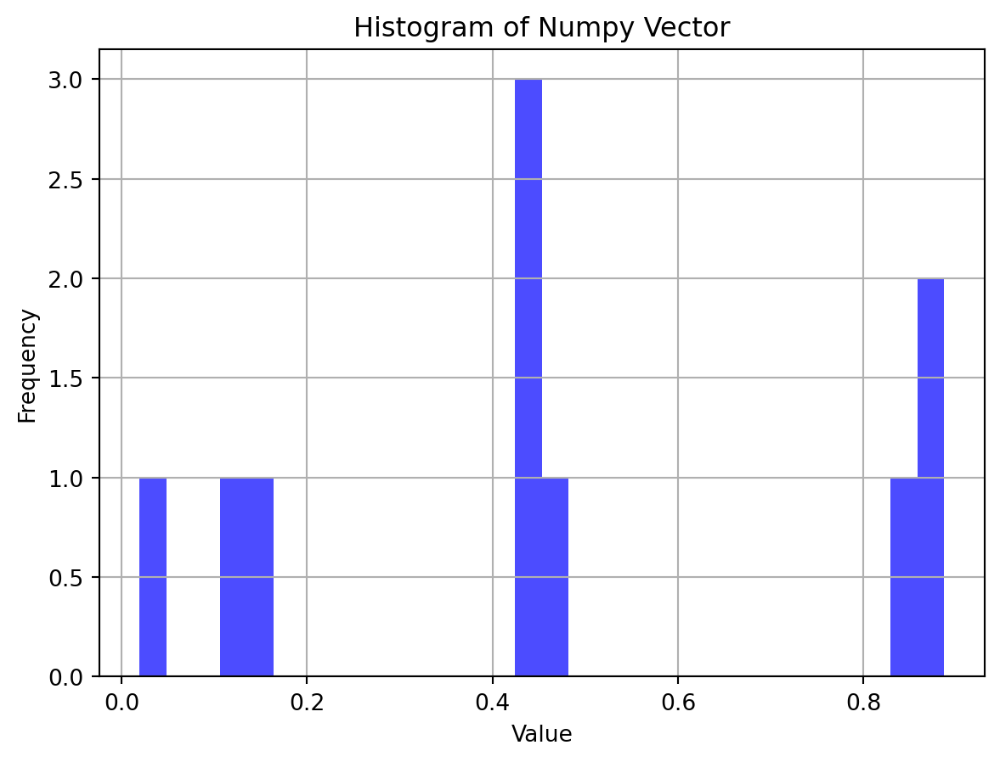
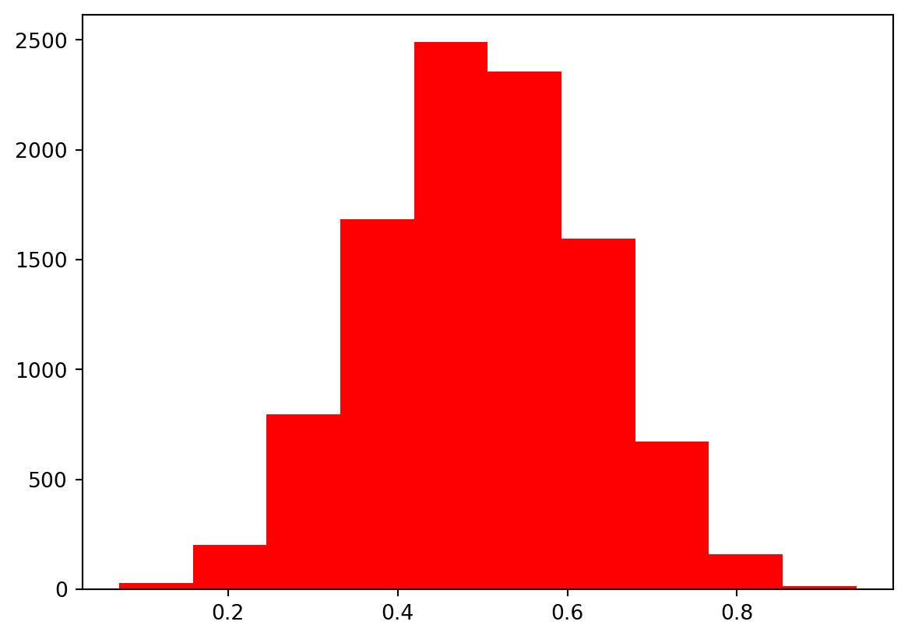
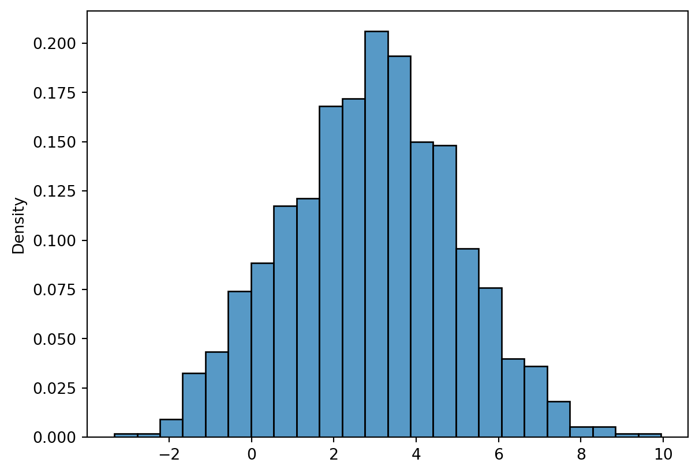
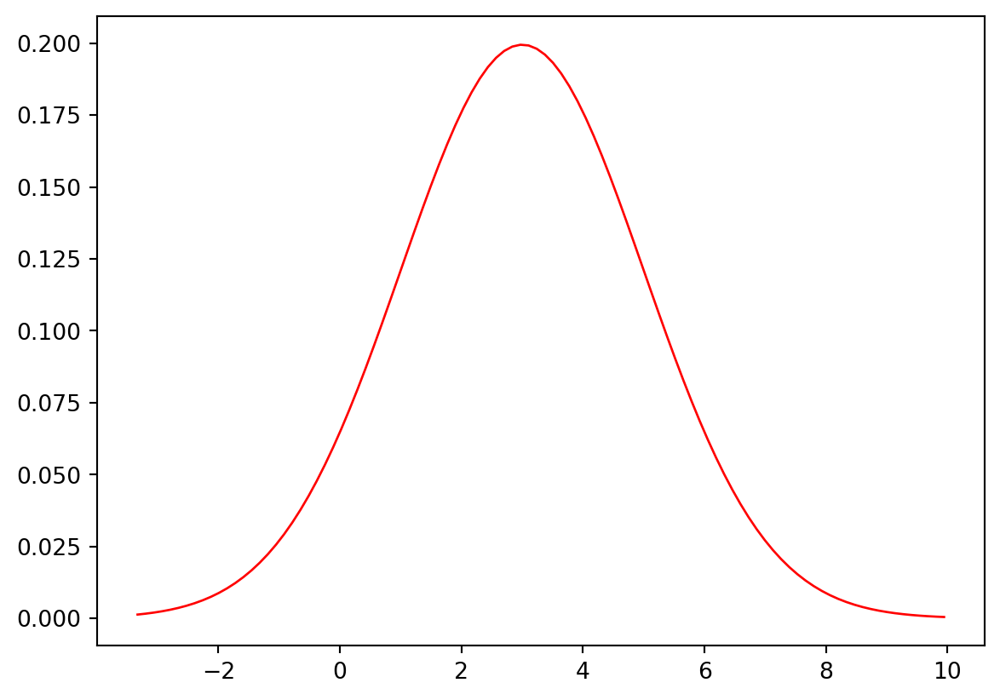

from scipy.stats import uniform
from scipy.stats import bernoulli
from scipy.stats import binom
import seaborn as sns
import pandas as pd
import matplotlib.pyplot as plt
import numpy as np
import math
from scipy.stats import normstat1
np.random.rand(1)array([0.8992])랜덤 상수 하나 생성 (0 ~ 1)
def Y(num, p):
x = np.random.rand(num)
return np.where(x < p, 1, 0)
Y(10, 0.5)array([0, 1, 0, 1, 1, 1, 0, 1, 1, 0])베르누이 확률 변수 p 만드는 함수
def Z():
x = np.random.rand(1)
return np.where(x < 0.2, 0, np.where(x < 0.7, 1, 2))
Z()[0]2가질 수 있는 값: 0, 1, 2
각각의 확률: 20%, 50%, 30%
np.where(condition, [x, y, ]/): 조건에 따라 선택된 요소를 반환
stat2
data = np.random.rand(10)
plt.hist(data, bins = 30, alpha = 0.7, color = "blue")
plt.title('Histogram of Numpy Vector')
plt.xlabel('Value')
plt.ylabel('Frequency')
plt.grid(True)
plt.show()
matplotlib.pyplot.hist(x, bins, range, density, weights, cumulativee, bottom, histtype='bar', align='mid', orientation='vertical', rwidth, log, color, label, stacked, *, data, **kwargs)
bins: 가로축 구간의 개수
alpha: 투명도
print(np.random.rand(50000).reshape(-1, 5))
mean = np.random.rand(50000).reshape(-1, 5).mean(axis = 1)
plt.hist(mean, color = 'red')
plt.show()[[0.08482631 0.45476043 0.36594681 0.44491919 0.47840514]
[0.0501691 0.32435757 0.14682793 0.89600186 0.0708613 ]
[0.94916122 0.1384767 0.63205611 0.86370261 0.2253005 ]
...
[0.91307353 0.3244289 0.58909156 0.08923296 0.17532848]
[0.96687794 0.61894828 0.54265031 0.32137445 0.75650216]
[0.02551134 0.31525587 0.809501 0.10956443 0.58599256]]
5개 뽑아서 10000번 반복하고 그 표본평균을 히스토그램으로 쌓아서 경향 파악
5개를 10000번 반복하는 걸 50000개 뽑는 걸로 합치고, 구분하기 위해 reshape(row, column)
np.unique((np.arange(33) - 16) **2)array([ 0, 1, 4, 9, 16, 25, 36, 49, 64, 81, 100, 121, 144,
169, 196, 225, 256])numpy.unique(ar): 중복된 값을 제거
x = np.arange(4)
pro_x = np.array([1/6, 2/6, 2/6, 1/6])
Ex = sum(x * pro_x) # 기댓값
Exx = sum(x**2 * pro_x) # E[X^2]
# Var(X) = E[X^2] - (E[X])^2
Exx - Ex**2
# or E[(X - E[X])**2]
sum((x - Ex)**2 * pro_x)0.9166666666666666X = 0, 1, 2, 3이고 확률이 1/6, 2/6, 2/6, 1/6일 때 분산
x = np.arange(99)
arr = np.concatenate((np.arange(1, 50), np.arange(50, 0, -1)))
pro_x = arr / 2500
Ex = sum(x * pro_x)
Exx = sum(x**2 * pro_x)
Exx - Ex**2416.50000000000090에서부터 98까지의 정수, 1/2500, 2/2500, 3/2500, … 50/2500, … 1/2500일 때 분산은?
np.concatenate(): 기존 축을 따라 배열 시퀀스를 연결 (axis=0이면 행(상하), axis=1이면 열 방향(좌우))
stat3
print("베르누이: ", bernoulli.pmf(1, 0.3))
print("이항분포: ", binom.pmf(0, n=2, p=0.3))베르누이: 0.3
이항분포: 0.48999999999999994확률질량함수 (pmf): 확률 변수가 갖는 값에 해당하는 확률을 저장하고 있는 함수
bernoulli.pmf(k, p): 베르누이
binom.pmf(k, n, p): 이항분포 (n: 베르누이 확률 변수 더한 개수, p: 1이 나올 확률)
Ex) binom.pmf(2, n=2, p=0.3): 베르누이를 2번 시행, 각 시행에서 1이 나올 확률은 0.3 -> 2가 나올 확률을 구하는 함수 (나올 수 있는 값은 0, 1, 2)
Ex) binom.pmf(np.arange(31), n=30, p=0.3): 베르누이를 30번 시행, 각 시행에서 1이 나올 확률은 0.3 -> 0, 1, 2, 3, … 30이 나올 확률을 구하는 함수 (array로 반환)
math.comb(54, 26)1877405874732108Combination 쉽게 하기
np.cumprod(np.arange(1, 5))[-1]24[-1]은 그냥 리스트에서 마지막 값 출력한 거임
np.cumprod(axis, skipna): 행/열의 누적곱 (skipna: 결측치를 무시할지)
math.log(24)
sum(np.log(np.arange(1, 5)))3.1780538303479453log(a * b) = log(a) + log(b) 같다
log(24) = log(1) + log(2) + log(3) + log(4) = log(1 * 2 * 3 * 4)
logf_54 = sum(np.log(np.arange(1, 55)))
logf_26 = sum(np.log(np.arange(1, 27)))
logf_28 = sum(np.log(np.arange(1, 29)))
np.exp(logf_54 - (logf_26 + logf_28))1877405874732132.5log로 큰 수 54C26 계산하기
math.comb(2, 0) * 0.3**0 * (1 - 0.3)**3
math.comb(2, 1) * 0.3**1 * (1 - 0.3)**1
math.comb(2, 2) * 0.3**2 * (1 - 0.3)**0
binom.pmf(0, 2, 0.3)
binom.pmf(1, 2, 0.3)
binom.pmf(2, 2, 0.3)0.09위 아래 의미가 같다
2C0 * (1을 뽑을 확률^1 개수) * (0을 뽑을 확률^0 개수) = n개 중에 r개를 뽑을 경우의 수 * 각 확률
# P(2 < X <= 8) = 8
binom.pmf(np.arange(3, 9), n = 10, p = 0.36).sum()0.7587761985950628연속이 아니고 이산이면 pmf로 저렇게 구할 수 있음
bernoulli.rvs(p = 0.3, size = 1)
bernoulli.rvs(0.3)0rvs (random variates sample): 분포로 부터 난수를 생성, 표본 추출 함수
Ex) bernoulli.rvs(p = 0.3, size = 1): 1이 나올 확률 0.3으로 1회 뽑기
# X ~ B(30, 0.26)
binom.rvs(n = 30, p = 0.26, size = 30)array([ 7, 11, 7, 7, 10, 8, 6, 11, 3, 9, 12, 13, 7, 13, 8, 10, 8,
9, 11, 6, 7, 4, 11, 9, 9, 6, 8, 7, 9, 8], dtype=int64)bernoulli.rvs(0.3) + bernoulli.rvs(0.3) = binom.rvs(n = 2, p = 0.3)
binom.rvs(n, p, size): n은 총 시행 횟수, p는 단일 성공 확률, size 생성할 난수의 수
이때 기댓값 E(X) = 30 * 0.26
# X ~ B(30, 0.26) 시각화
arr = binom.pmf(np.arange(31), 30, 0.26)
plt.bar(np.arange(31), arr)
plt.show()
plt.clf()<Figure size 672x480 with 0 Axes>30번 시행했을 때 분포를 시각화하려면 확률 변수 범위는 0부터 30까지, 각 시행에 대응되는 확률 값을 pmf로 연산해 arr에 저장한다
x 값은 0 ~ 30, y는 확률 arr
# 교재 p207 df로 만들어서 막대그래프로 표시하기
x = np.arange(31)
df = pd.DataFrame({"x": x, "prob": arr})
sns.barplot(data = df, x = "x", y = arr)
plt.show()df로 만들어서 막대그래프 그리는데 DataFrame 선언부 확인
# F_X(x) = P(X <= x)
binom.cdf(4, n=30, p=0.26)
# P(13 < X < 20) = ?
binom.cdf(19, n=30, p=0.26) - binom.cdf(13, n=30, p=0.26)0.011719250461955766누적확률분포 함수 cdf (Cumulative Dist. Function): 확률 변수가 X와 같거나 작을 확률
binom.cdf(k, n, p): 베르누이를 n번 시행했을 때 p의 성공 확률로 k번 이하로 나올 확률
binom.rvs(n=30, p=0.26, size=10)array([10, 9, 10, 1, 5, 7, 6, 13, 2, 10], dtype=int64)성공 확률 0.26의 확률로 30번 했을 때 총합을 10개 생성 <나온 값의 결과!>
x_1 = binom.rvs(n=30, p=0.26, size=10)
x = np.arange(31)
prob_x = binom.pmf(x, n=30, p=0.26)
sns.barplot(prob_x)
plt.scatter(x_1, np.repeat(0.002, 10), color = 'red', zorder = 100, s = 5)
plt.axvline(x = 7.8, color = 'lightgreen', linestyle = '--', linewidth = 2)
plt.show()x는 전체 시행 가운데 성공의 횟수(구하는 확률 값), n은 전체 시행 횟수, p는 독립 시행의 성공 확률
x_1 = binom.rvs(n=30, p=0.26, size=10): 0.26의 성공확률을 30번 시행한 것의 총합을 10번
prob_x = binom.pmf(x, n=30, p=0.26): prob_x에는 30번 던져서 0번 성공, 1번 성공, … 30번 성공까지의 확률이 들어감 <확률!>
plt.scatter(x_1, np.repeat(0.002, 10), color = 'red', zorder = 100, s = 5): y는 0.002 고정, x는 확률 변수, zorder는 그리는 순서, s는 size
plt.axvline(x = 7.8, color = 'lightgreen', linestyle = '--', linewidth = 2): 0.26 * 30 = 0.78은 기댓값
파랑 벽돌의 분포가 기댓값과 비슷하다?
binom.ppf(0.5, n = 30, p = 0.26) # 8까지 다 더하면 X = 0.5가 된다는 뜻8.0binom.ppf(q, n, p): 누적 확률이 q 이상이 되는 k(=x)를 구함
norm.pdf(0, loc = 0, scale = 1)
norm.pdf(5, loc = 3, scale = 4)
k = np.linspace(-5, 5, 100)norm.pdf(x, loc, scale): 정규 분포의 확률 밀도 함수 값 반환 (y)
np.linspace(start, stop, num): start에서 stop까지 num개의 요소를 만들어라
# X ~ N(3, 5^2)
# P(3 < X < 5) = ?
print(norm.cdf(5, loc = 3, scale = 5) - norm.cdf(3, loc = 3, scale = 5))
x = norm.rvs(loc = 3, scale = 5, size = 1000)
print(sum((x > 3) & (x < 5)) / 1000)0.15542174161032418
0.167위: 확률밀도함수 / 아래: 표본 추출 후 검증 값을 뽑았을 때 3이랑 5 사이에 있을 확률이 15%이다
x = norm.rvs(loc = 3, scale = 2, size = 1000)
sns.histplot(x, stat = "density")
plt.show()
plt.clf()
<Figure size 672x480 with 0 Axes>sns.histplot(x)로 하면 x의 빈도(Count)가 y로 들어간다 scale을 맞추기 위해 stat = “density”로 해주면 pdf랑 그렸을 때 맞춰짐 (0 ~ 1) 아마 비율…???
xmin, xmax = x.min(), x.max()
x_values = np.linspace(xmin, xmax, 100)
pdf_values = norm.pdf(x_values, loc = 3, scale = 2)
plt.plot(x_values, pdf_values, color = "red", linewidth = 1)
plt.show()
plt.clf()
<Figure size 672x480 with 0 Axes>rvs로 뽑은 확률 밀도 함수를 추종하는 plot 그리기
stat4
uniform.rvs(loc=2, scale=4, size=1)
k = np.linspace(0, 8, 100)
y = uniform.pdf(k, loc=2, scale=4)
plt.plot(k, y, color = "black")
plt.show()
plt.clf()<Figure size 672x480 with 0 Axes>균등 분포, 균일 분포: 주어진 확률 변수 범위 안에서 모든 확률 밀도 값이 일정한 확률 밀도 분포
uniform.rvs(loc=2, scale=4, size=1): 균일 분포의 평균(loc)과 표준 편차(scale)의 범위 내에서 size = n개의 랜덤 표본을 생성
rvs도 그렇고 ppf도 그렇고 그래프 그리면 2 ~ 6 범위에서 평균 4를 가지는데, 왜 2가 아니냐고 생각할 수 있다 uniform에서 loc은 평균이 아니라 시작점이고, scale은 너비라서 2에서 +4 -> 6까지 그려지는 거임
x = uniform.rvs(loc=2, scale=4, size=20, random_state = 42): random_state에 값을 넣으면 돌려도 같은 값이 x에 들어감
확률 변수 X가 균일 확률 변수이면 E(X) = (a + b) / 2, Var(X) = (b - a)^2 / 12
#-------------------------------------------------------------------------------
# 신뢰구간
# X bar ~ N(mu, sigma^2/n)
# X bar ~ N(4, 1.333/20)
plt.clf()
x_values = np.linspace(3, 5, 100)
pdf_values = norm.pdf(x_values, loc = 4, scale = np.sqrt(1.3333/20))
plt.plot(x_values, pdf_values, color = "red", linewidth = 1)
# 중앙을 기준으로 95%를 구할 때, 왼쪽 거 기준으로 구하려면 0.025를 넣어야 함
a = norm.ppf(0.025, loc = 4, scale = np.sqrt(1.3333/20))
b = norm.ppf(0.975, loc = 4, scale = np.sqrt(1.3333/20))
# 99%
a = norm.ppf(0.005, loc = 4, scale = np.sqrt(1.3333/20))
b = norm.ppf(0.995, loc = 4, scale = np.sqrt(1.3333/20))
# 모평균에 대한 구간 추정 39p
# 표준정규분포에서 99%를 포함하려면 2.57쯤 되어야 한다
# norm.ppf(0.005, loc = 0, scale = 1) = +-2.57
# 정규분포를 따르는 표본에서 99% 포함 펜스를 치려면 2.57에서 표준편차 만큼을 불린다??
# a = blue_x + 2.57 * np.sqrt(1.333333 / 20)
# b = blue_x - 2.57 * np.sqrt(1.333333 / 20)
# 표본평균(파란 벽돌) 점 찍기
blue_x = uniform.rvs(loc=2, scale=4, size=20).mean()
plt.scatter(blue_x, 0.002, color = 'blue', zorder = 10, s = 10)
# 기댓값 표시
plt.axvline(x = 4, color = 'green', linestyle = '--', linewidth = 2)
plt.show()
plt.clf()
#-------------------------------------------------------------------------------<Figure size 672x480 with 0 Axes>표본 평균은 N(mu, sigma^2/n)을 따른다 -> (평균, 분산)
정규분포를 따르는 표본에서 n1% 포함 펜스를 치려면 표준정규분포에서 구한 값(norm.ppf(n2, loc = 0, scale = 1))에서 표본의 표준편차 만큼을 불린다??
blue_x = uniform.rvs(loc=2, scale=4, size=20).mean(): 헷갈리지 말자~~!! uniform이라서 평균이 2가 아니고 2 ~ 6이라 4 맞음…
계속 돌리면 기댓값 4를 기준으로 파란 벽돌(표본 평균)이 왔다 갔다 함
x = uniform.rvs(loc=2, scale=4, size=20*1000, random_state = 42)
x = x.reshape(1000, 20) # 1줄당 20개
blue_x = x.mean(axis = 1) # len(blue_x) = 1000, blue_x.shape = (1000,)
sns.histplot(blue_x, stat = "density")
# 회색 벽돌을 생성시키는 평균과 분산은 4, 1.333333...
uniform.var(loc = 2, scale = 4)
uniform.expect(loc = 2, scale = 4)
# 파랑 벽돌의 분포를 그렸을 때 평균은 4, 분산은 1.333/20을 따른다
# X bar ~ N(mu, sigma^2/n)
# X bar ~ N(4, 1.333/20)
xmin, xmax = blue_x.min(), blue_x.max()
x_values = np.linspace(xmin, xmax, 100)
pdf_values = norm.pdf(x_values, loc = 4, scale = np.sqrt(1.3333/20))
plt.plot(x_values, pdf_values, color = "red", linewidth = 1)
plt.show()